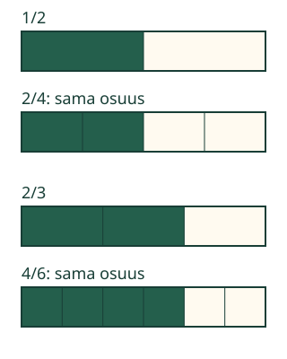

<link rel="stylesheet" href="lesson.css" />


<section data-teaching-step="1" data-lesson-role="teaching-step">
<section class="lesson-intro"><h2>Voiko sama osa saada uuden nimen?</h2><p>Loikka on merkinnyt puolet nauhasta. Jos jokaiseen osaan tulee uusi jakoviiva, saako hän lisää merkittyä nauhaa?</p><p><strong>Tunnistan samanarvoisia murtolukuja kuvasta ja merkinnästä.</strong></p></section>
</section>


<section>


<section data-teaching-step="2" data-lesson-role="teaching-step">
<h2>Paperista kuvaan</h2><p>Taita suikale puoliksi ja merkitse toinen puolikas. Taita koko suikale vielä kerran puoliksi. Avaa: puolikas koostuu nyt kahdesta neljäsosasta. Väriä ei lisätty eikä paperia poistettu.</p><figure data-lesson-role="worked-example"><figcaption>Samansuuruinen eli samanarvoinen: eri merkinnät, sama luku.</figcaption></figure>
</section>


<section data-teaching-step="3" data-lesson-role="teaching-step">
<h3>Puolikas säilyy</h3><p><strong>1/2 = 2/4 = 4/8.</strong> Osia on enemmän, mutta jokainen on pienempi. Kun kuvat esittävät samankokoista kokonaista, merkittyä osuutta on yhtä paljon.</p>
</section>


<section data-teaching-step="4" data-lesson-role="teaching-step">
<h3>Uusi esimerkki: kaksi kolmasosaa</h3><p><strong>2/3 = 4/6.</strong> Jokainen kolmasosa jaetaan kahteen yhtä suureen osaan. Myös vaalea kolmasosa jaetaan. Näin koko nauhassa on kuusi yhtä suurta osaa ja neljä niistä on merkitty.</p>
</section>


<section data-teaching-step="5" data-lesson-role="teaching-step">
<h3>Ansakohta: molempiin yksi lisää?</h3><p>1/2 ja 2/3 eivät ole samanarvoisia. Kahdessa kolmasosassa on suurempi osuus kuin puolikkaassa. Tarkista osuus samankokoisilla nauhoilla; lukujen suurentuminen ei yksin ratkaise.</p>
</section>


</section>


<section data-equivalent-lesson>
<section data-teaching-step="6" data-lesson-role="teaching-step">
<h2>Tee jakoviivat itse</h2><p>Ennusta ennen leikkausta: muuttuuko merkitty osuus? Liikuta jakoviivaa omaan tahtiin tai etene yksi valmis viiva kerrallaan.</p>
<div data-audience-columns><div data-visual-column><div data-model></div><p data-caption aria-live="polite"></p></div><div data-response-column><label>Lähtömalli<select data-demo-choice><option value="0">1/2</option><option value="1">2/3</option><option value="2">3/4</option></select></label><label>Jakoviivojen eteneminen<input type="range" min="0" max="6" step="0.05" value="0" data-progress /></label><p><button type="button" data-action="step">Seuraava valmis jakoviiva</button> <button type="button" data-action="demo-reset">Palauta lähtöjako</button></p><p>Välivaiheessa kaikki osat eivät vielä ole yhtä suuria. Uusi murtolukumerkintä ilmestyy vasta, kun jokainen vanha osa on jaettu samalla tavalla. Ruudun viiva kuvaa paperin jakoa; se ei osoita käsin taittamisen taitoa.</p></div></div>
</section>


<section data-teaching-step="7" data-lesson-role="teaching-step">
<section data-practice><h2>Kirjoita sama arvo toisella tai samalla tavalla</h2><p data-task></p><div data-audience-columns><div data-visual-column><div data-comparison></div><p data-candidate-note></p></div><div data-response-column><label>Osoittaja<input type="text" inputmode="numeric" maxlength="20" data-top /></label><label>Nimittäjä<input type="text" inputmode="numeric" maxlength="20" data-bottom /></label><p><button type="button" data-action="check">Tarkista merkinnät</button> <button type="button" data-action="clear">Tyhjennä merkintä</button> <button type="button" data-action="next">Toinen lähtöarvo</button></p><p data-feedback role="status" aria-live="polite">Kirjoita samanarvoinen merkintä.</p><details data-lesson-role="hint"><summary>Apua: katso samaa osuutta</summary><p>Voit käyttää lähtökuvan omaa merkintää. Voit myös jakaa jokaisen osan kahtia ja laskea uudet valitut osat sekä kaikki osat. Esimerkiksi 1/2 käy myös muodossa 3/6 tai 5/10: vain yhtä ennalta määrättyä vastausta ei vaadita.</p></details></div></div></section>
</section>
</section>


<section data-teaching-step="8" data-lesson-role="teaching-step">
<details data-lesson-role="teaching-step"><summary>Lisätutkimus: luvut ja eri kokonaiset</summary><p>Piirrä yksi pitkä ja yksi lyhyt nauha. Merkitse kummastakin puolet. Molemmissa merkintä on 1/2, mutta pitkästä nauhasta tulee enemmän paperia. Luku ja osuus ovat samat; paperin määrä riippuu myös kokonaisen koosta.</p><p>Jos osaat kertolaskua, tutki: kun jokainen osa jaetaan kolmeen, sekä osoittaja että nimittäjä kerrotaan kolmella. Esimerkiksi 2/3 = 6/9. Kuvasta tunnistaminen ei edellytä tämän laskusäännön osaamista. Samalla lukusuoralla samanarvoiset murtoluvut sijoittuvat samaan kohtaan.</p></details>
</section>


<details class="teacher" data-lesson-role="teacher-note"><summary>Opettajalle: samanarvoisuus ja rajat</summary><p>Vuosiluokat 3–6. Vaadittu esitieto on M-FRAC-02. M-MUL-01 on vahva tuki laskulliseen yleistykseen, ei pakollinen portti; aloita puolikkaan ja neljäsosien kuvasta. M-FRAC-03:n sanasto palautetaan ohjainten yhteydessä, eikä sitä lisätä vaadituksi esitiedoksi.</p><p>Offline: taittakaa yhtäsuuret suikaleet ja asettakaa ne alkujen kohdalta päällekkäin. Vaihtakaa myös siihen, kumpi suikale on päällimmäisenä. Kiinnittäkää huomio koko jakoon, ei vain värialueen uusiin viivoihin. Eri muotoiset saman pinta-alan osat ovat mahdollisia; tasasuuret suorakulmiot on valittu tässä helpon vertailun vuoksi.</p><p>Tarkistus hyväksyy kaikki samanarvoiset, ei-negatiiviset kokonaislukumerkinnät annetuissa 0–24 rajoissa, nimittäjä vähintään 1. Supistettu muoto ei ole vaatimus. Sama lähtömerkintäkin on tosi vastaus; siitä ei väitetä uuden ekvivalenssin tuottamista. Alueen ulkopuolinen oikea murtoluku ei ole matemaattisesti väärä: kokeile sitä paperilla.</p><p>Opetus rajautuu yhden kokonaisen pieniin osiin. Malli näyttää osuuden säilymisen, ei oikeuta lisäämään samaa lukua molempiin. Vapaa merkinnän muodostaminen antaa enemmän tietoa kuin valmiin vaihtoehdon tunnistus, mutta tuettu harjoitus ei ole itsenäisen, viivästetyn tai formaalin hallinnan näyttö. Ei pisteitä, tallennusta tai henkilöhistoriaa. Ilman JavaScriptiä staattiset esimerkit ja paperitehtävä toimivat.</p></details>


<section data-teaching-step="9" data-lesson-role="teaching-step">
<section><h2>Lopuksi</h2><p>Näytä kuvalla tai paperilla, miksi 1/2 ja 2/4 ovat yhtä suuret. Mikä muuttui? Mikä säilyi? Selitystä ei tarvitse kuitata puheella.</p></section>
</section>


